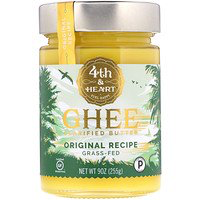
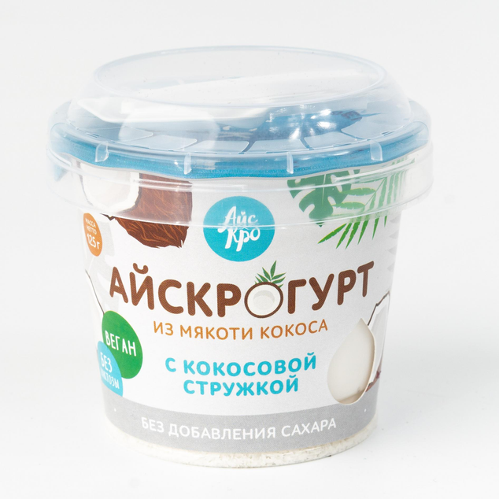
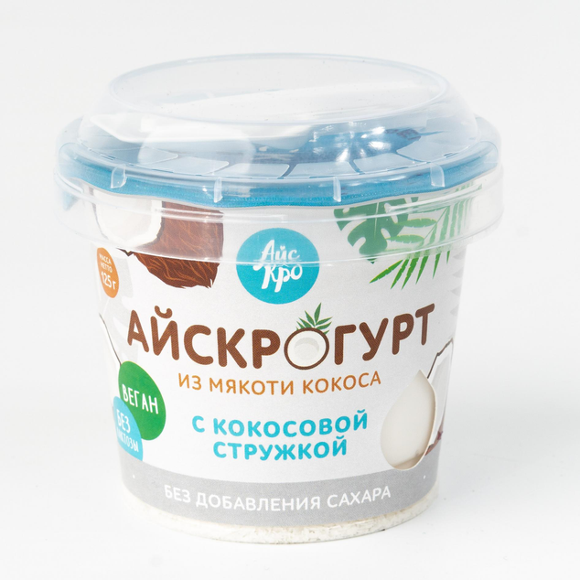

Разрешенные продукты:
Любая рыба- треска, кета, горбуша, скумбрия (сырая, не копчённая). Идеальный источник омега3 — палтус, дорада, сибас. Строго ограничено ( из-за высокой накопления тяжелых металлов ) — семга, тунец, пангасиус (лучше исключить). В список по желанию добавляете морепродукты: креветки, кальмар, мидии, и тд. Малосольная Рыба ( лучше выбирайте дикой природы: кета, горбуша, кижуч) — идеально разнообразит завтрак. Мясо — индейка, утка, кролик, нежирная телятина, курица (свободного выгула, домашняя). Субпродукты — идеальный источник витаминов A, D, E и группы B (печень индейки или кролика). Яйца-перепелиные, цесарки, куриные (только фермерские, свободного выгула). Овощи — разрешены все и побольше, картофель можно только с резидентным крахмалом (картофель отварить и охлодить в холодильнике) так лучше для микробиома кишечника. Все виды капуст (цветная, брюссельская, брокколи, белокочанная, краснокочанная, айсберг). Перец болгарский, огурцы, помидоры, баклажаны, морковь (но не тушёная), кабачок, лук. Множество зелени (петрушка, укроп, кинза, шпинат, руккола и тд). Каши (пшено, киноа, гречневую, макароны без глютена, иногда цельнозерновой хлеб). Все каши в обед. Цельнозерновой хлеб до 2х раз в неделю на завтрак с белком❗️Хлебцы без глютена (Dr.korner — прованские травы и гречневые, рисовые, кукурузные (кукурузу в составе продукта- можно, цельную- нельзя)).


Молочные продукты — допустимо в ограниченном количестве (пару раз в неделю) сыр.Отдавайте предпочтение козьему или овечьему сыру. Остальные под запретом. Молочные продукты приводят к процессам гликации в организме (процесс старения на клеточном уровне). Так же в молочных продуктах содержится белок каземорфин, который организм не в состоянии переваривать. Фрукты. Все фрукты употребляем после основного приёма пищи. В перекус нельзя — это табу❗️Рекомендуемые: ягоды (малина, клубника, голубика, вишня, чёрная смородина, клюква, брусника), грейпфрут, яблоки зеленые. До 1 порции в день. Кокосовое молоко, сливки — в нем можно тушить продукты. (В супермаркете в отделе тайской кухни. Обязательно смотрите состав, чтоб там кроме кокоса и воды ничего не было)

Козий сыр:


Орехи (желательно заранеее вымоченные. Особенно тем, кто принимает препараты железа). Кому трудно дается 3х разовое питание можете делать перекус- 20-30 гр орехов. Как вымачивать орехи: на ночь ставите в воду, на утро промываете и высушиваете на низкой температуре в духовке. Масла — оливковое, кунжутное, авокадо, грецкого ореха, масло ГХИ, сливочное масло (хорошего качества), масло виноградной косточки, кокосовое масло. Жарить можно на — кокосовом, ГХИ (топленное), утином или гусином жиру.
Вкусное масло гхи Российского производства
Альтернативы с IHERB :
Жидкое масло ГХИ - удобно жарить
Масло авокадо для салатов
Оливковое масло для салатов
Как насчет сладкого?

 


Цельнозерновой хлеб берем такой:

Чем подслащать вместо сахара?
Фитпарад — сахарозаменители на основе стевии:

Эритритол с IHERB:
Пребиотический сироп Якона ( очень полезно для микробиоты )
Разрешенные печенья: